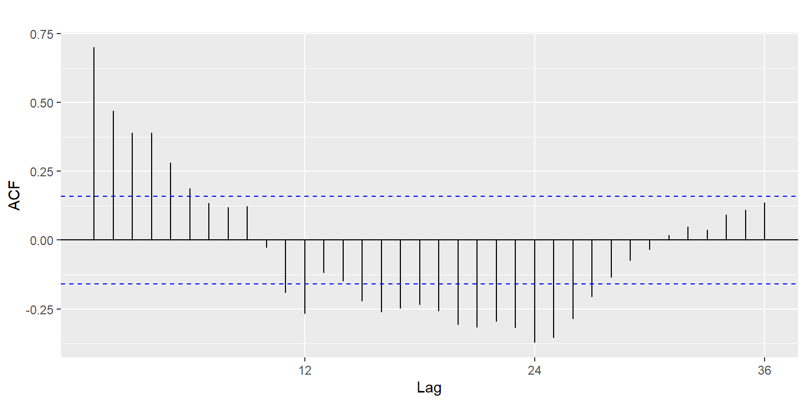
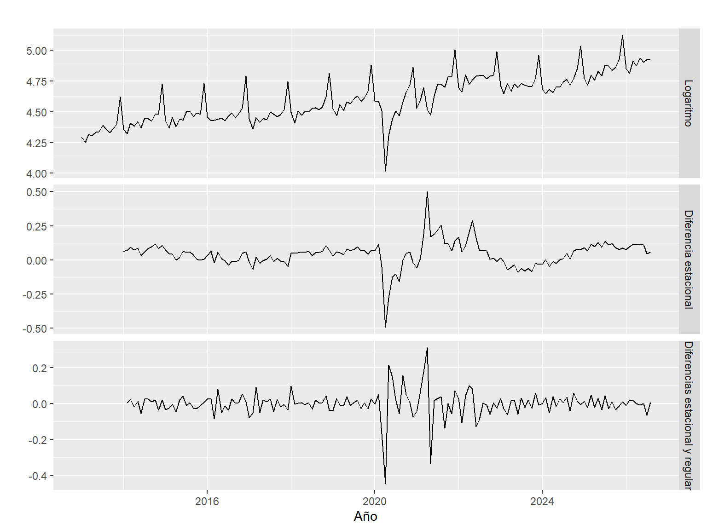
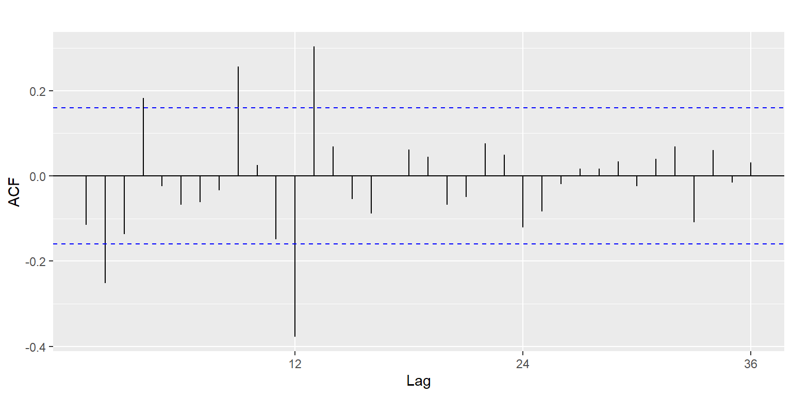

Capítulo 8 Estacionariedad y diferenciación
Una serie es estacionaria cuando su promedio y su variabilidad no cambian con el tiempo y no tiene patrones que se repitan de forma fija. Modelos como ARIMA necesitan trabajar sobre una serie estacionaria, así que hay que comprobar si esta lo es.
Cuando una serie no es estacionaria, la forma más común de corregirla es diferenciarla, es decir, trabajar con los cambios en lugar de los niveles:
- Diferencia regular: el cambio frente al mes anterior, \(y_t - y_{t-1}\). Quita la tendencia.
- Diferencia estacional: el cambio frente al mismo mes del año anterior, \(y_t - y_{t-12}\). Quita la estacionalidad.
8.1 Cómo se comprueba
Además de revisar los gráficos y la ACF, se usan dos pruebas estadísticas del paquete tseries, que se complementan porque parten de hipótesis opuestas:
- Prueba ADF (Dickey-Fuller aumentada): su hipótesis nula es que la serie no es estacionaria. Un valor p menor a 0,05 indica que sí lo es.
- Prueba KPSS: su hipótesis nula es que la serie sí es estacionaria. Un valor p menor a 0,05 indica que no lo es.
Se toma una serie como estacionaria cuando las dos pruebas coinciden. Para no repetir código, se crea una función pequeña que devuelve los dos valores p:
library(tseries)
pruebas <- function(x) {
c(ADF = adf.test(x)$p.value, KPSS = kpss.test(x)$p.value)
}Las funciones de tseries reportan los valores p dentro de un rango, así que un 0,01 significa “0,01 o menos” y un 0,10 significa “0,10 o más”.
8.2 Paso 1: la serie en logaritmos
## ADF KPSS
## 0.01 0.01La KPSS da un valor p menor a 0,05, así que la serie no es estacionaria, como ya se veía en la tendencia de la Figura 7.1. La ADF da un resultado contrario, pero no es confiable en este caso: los picos de diciembre se repiten de forma tan regular que la prueba los confunde con una serie que vuelve siempre a su promedio. El gráfico, la descomposición y la ACF de la Unidad 2, que bajaba muy lento, coinciden en que hay tendencia.
8.3 Paso 2: diferencia estacional
Como la estacionalidad es el patrón más fuerte, se aplica primero la diferencia de 12 meses. La serie resultante es, en la práctica, la tasa de crecimiento anual del índice:
## ADF KPSS
## 0.07 0.10La estacionalidad desaparece, pero el resultado todavía no es claro: la KPSS acepta que la serie es estacionaria, mientras que la ADF da 0,07 y no alcanza a confirmarlo. Además, su ACF baja lentamente, señal de que queda algo de tendencia:

Figura 8.1: ACF de la serie con diferencia estacional.
8.4 Paso 3: diferencia regular
Para quitar la tendencia que queda se aplica una diferencia regular a la serie del paso 2:
## ADF KPSS
## 0.01 0.10Ahora las dos pruebas coinciden: la ADF rechaza que la serie no sea estacionaria (valor p de 0,01) y la KPSS no rechaza que lo sea (0,10). La serie ya es estacionaria. La función nsdiffs() de forecast coincide en que se necesita una diferencia estacional:
## [1] 1autoplot(cbind("Logaritmo" = ly,
"Diferencia estacional" = d12,
"Diferencias estacional y regular" = dd), facets = TRUE) +
labs(x = "Año", y = "")
Figura 8.2: La serie en cada paso: logaritmo, con diferencia estacional y con las dos diferencias.
En la Figura 8.2 se ve el efecto de cada paso: la serie en logaritmos sube y tiene picos cada diciembre; con la diferencia estacional desaparecen los picos, pero la serie todavía se mueve por rachas; con las dos diferencias queda oscilando alrededor de cero, con una variabilidad parecida en todo el periodo. Solo 2020 y 2021 se salen de ese comportamiento por la pandemia.

Figura 8.3: ACF de la serie con las dos diferencias.
La ACF de la Figura 8.3 ya no baja lentamente: la mayoría de las barras están dentro de las bandas. Sobresale el rezago 12 y, en menor medida, algunos rezagos cortos (2, 9 y 13). El rezago 12 muestra que todavía queda una relación con el mismo mes del año anterior. Esa relación es la que deberá recoger el modelo ARIMA estacional en la siguiente unidad.
8.5 Resumen del procedimiento
| Paso | Procedimiento | ¿Era necesario? | Por qué |
|---|---|---|---|
| 1 | Logaritmo | Sí | La variabilidad crecía con el nivel de la serie |
| 2 | Diferencia estacional (12 meses) | Sí | La estacionalidad anual es fuerte y estable |
| 3 | Diferencia regular (1 mes) | Sí | Después del paso 2 quedaba tendencia y las pruebas no coincidían |
No se aplicó una segunda diferencia regular: con una sola, las pruebas ya coinciden en que la serie es estacionaria, y diferenciar de más agrega ruido sin necesidad.